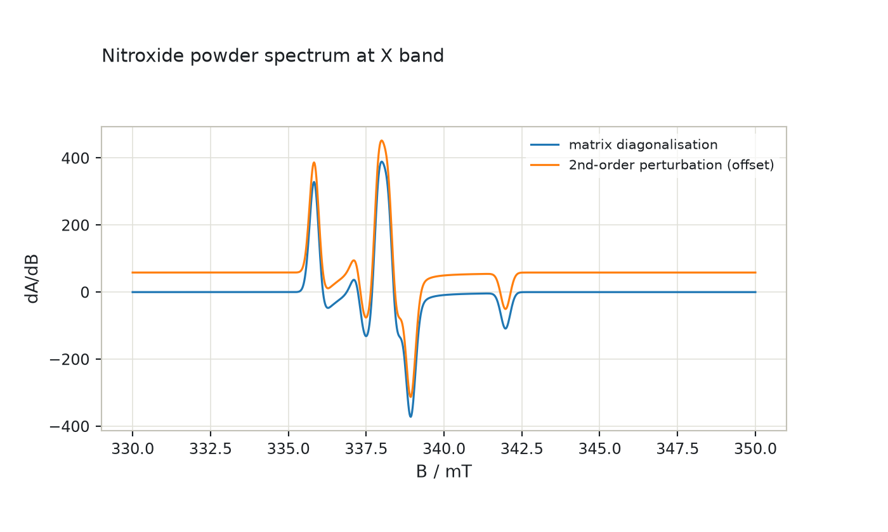
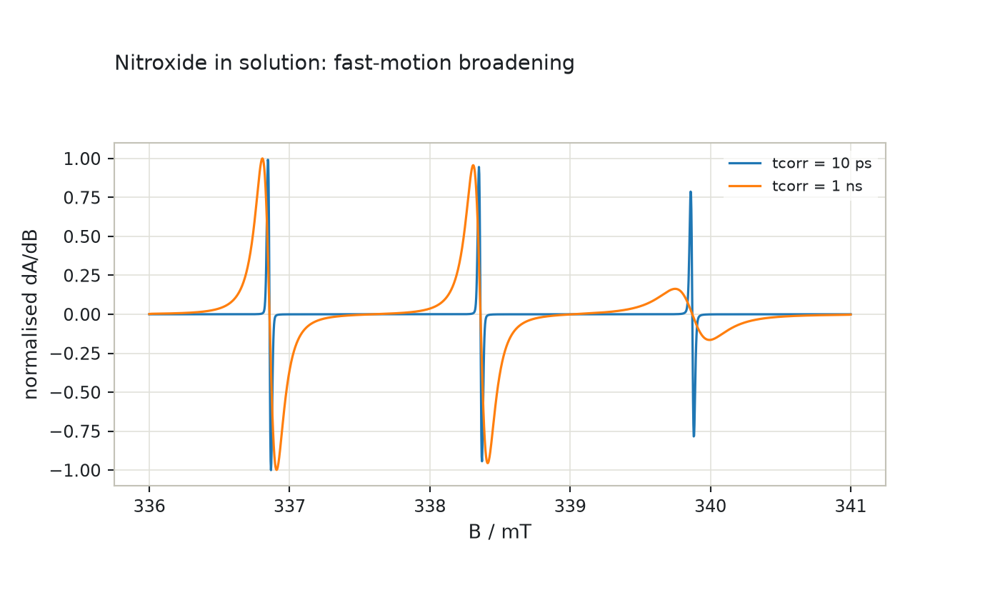
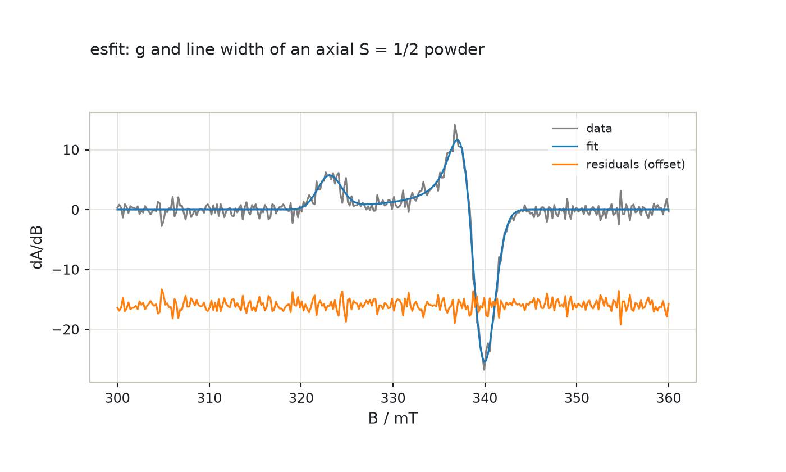
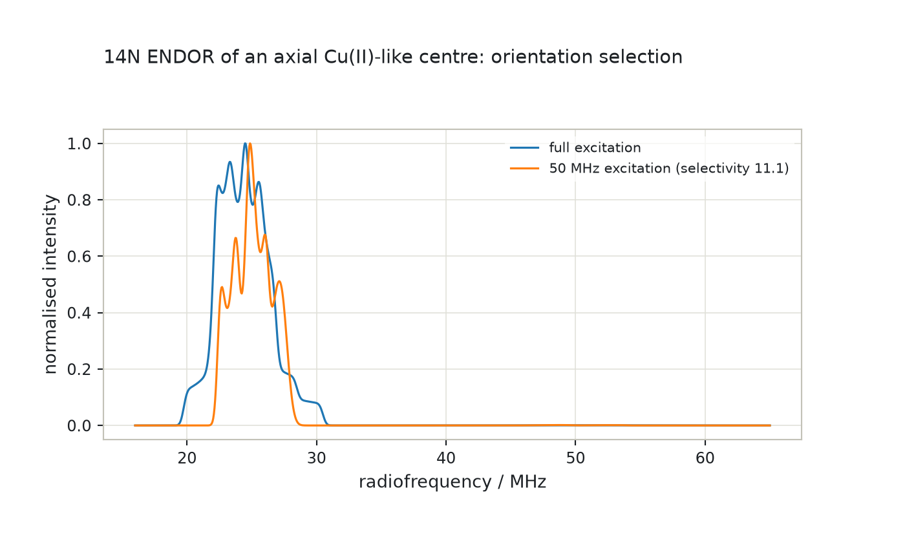
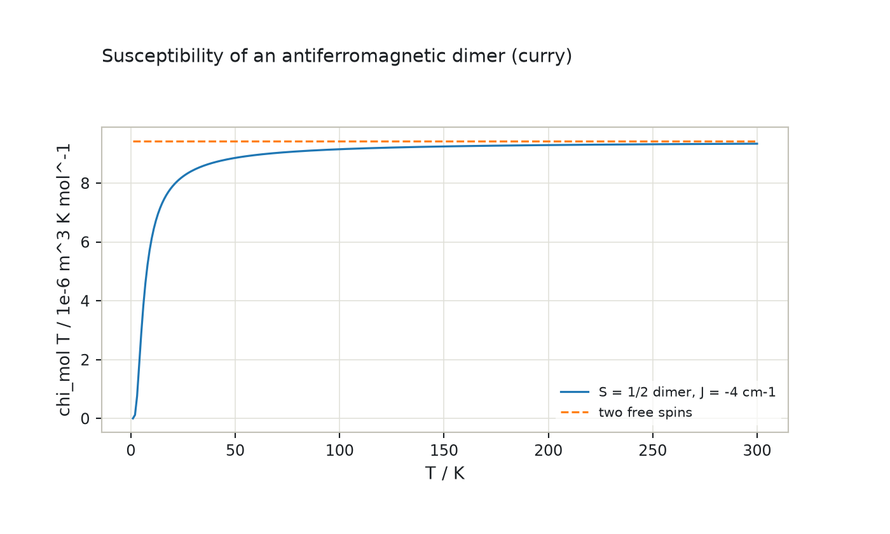
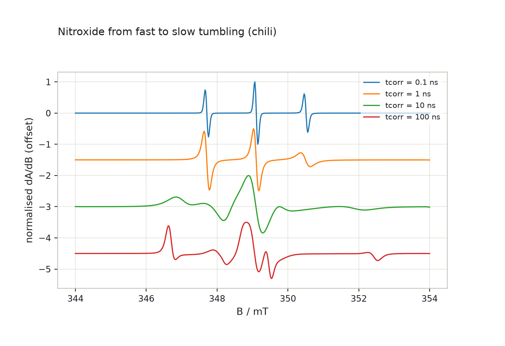
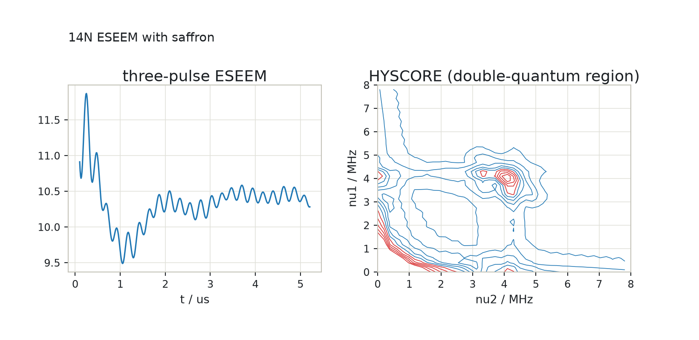

epreasy ports EasySpin 6.0.15, the MATLAB toolbox for EPR spectral simulation by Stefan Stoll and co-workers, keeping its interface: spin systems as dicts with EasySpin's field names, fields in mT, couplings in MHz, 1-based spin numbers. Every simulator is verified against EasySpin on reference data EasySpin wrote itself.
epreasy is its own package in the same repository and distribution, imported as import epreasy. It depends on spynach (for the oracle reader and comparison tools), never the reverse: a test walks the sources and fails if anything in the Spinach port imports it. The Spinach port stays a pure mirror of Spinach; EasySpin's methods, which do not fit Spinach's create, basis, sequence, context pipeline (field sweeps, resonance-field search, perturbation theory, orientation interpolation, the Wigner-function slow-motion basis, fitting), live here with their own isotope table, units and angle conventions.
The port works from EasySpin's readable source at tag v6.0.15 (MIT licence; the attribution is kept in LICENSE). EasySpin's seven C kernels (line summation, triangle projection, cubic roots, peak binning, the slow-motion Liouvillian) are rewritten in NumPy, with a Numba path for the three that pepper and garlic use, bit-exact with the MEX files. Algorithms, not compiled code, give EasySpin its speed, and the algorithms are ported.

pepper: cw EPR of powders and crystals by the matrix, hybrid, perturbation and eigenfield methods, with orientation interpolation, triangle projection, strains, convolution, field modulation.
garlic: isotropic solutions with Breit-Rabi and perturbation line positions, equivalent nuclei, fast-motion widths, frequency sweeps.
esfit: least-squares fitting of any simulator or custom model with EasySpin's algorithms (simplex, Levenberg-Marquardt, Monte Carlo, genetic, grid, particle swarm), uncertainties, baselines, masks, global fits.
salt, endorfrq: ENDOR frequencies and powder or crystal spectra, orientation selection, hyperfine enhancement, pulse-ENDOR flip angles.
curry: magnetic moments and susceptibilities in SI and CGS by the operator or partition-function method.
chili: the stochastic Liouville equation in the Wigner basis, Brownian diffusion, ordering potentials, MOMD, Lanczos with continued fraction and the other solvers.
saffron: pulse EPR with ideal and rectangular pulses, ESEEM, HYSCORE, Mims ENDOR and custom sequences with coherence transfer pathways, relaxation decays, product rule.Underneath: EasySpin's spin-system validation, sop and the Stevens operators, ham with the field split that makes field sweeps cheap, levels, resfields with its adaptive spline modelling of the energy level diagram, the eigenfield method, line shapes, the SOPHE grids, rotations, units and EasySpin's isotope table. The function-by-function list is in the package README.
The thyme engine of saffron (shaped pulses, explicit propagation, resonators) and spidyan; esfit's window and the other GUIs; chili's C kernel for the Liouvillian (the general method, which the kernel reproduces to 1e-3, is the ported one), Heisenberg exchange and the LMK basis; isotope mixtures, partial ordering and sample rotations; orbital angular momentum, higher-order Zeeman terms, crystal symmetries beyond P1; the MD-trajectory methods and Bruker file readers. The guide Coming from EasySpin keeps the list current, simulator by simulator.
Spectrum(x, spec, info), FitResult), nothing plots by itself. Each such deviation is recorded in the comparison guide.After installing (the fast extra adds Numba for the kernels): energy levels, then a powder spectrum.
import epreasy as es
nitroxide = {"g": [2.0088, 2.0061, 2.0027], "Nucs": "14N", "A": [16, 16, 86]}
print("levels at 340 mT along z (MHz):", es.levels(nitroxide, "z", 340).round(1))
powder = es.pepper({**nitroxide, "lwpp": 0.3}, {"mwFreq": 9.5, "Range": [330, 350]})
print(powder.spec.shape, "points; extrema at", powder.x[[powder.spec.argmax(), powder.spec.argmin()]].round(2), "mT")In the browser playground the EPR group of examples runs every simulator with nothing installed: powder spectrum, solution, slow motion, ESEEM, HYSCORE, Mims ENDOR, cw ENDOR, magnetometry, energy levels, Cu(II) with four 14N and a fit.
Reference data are written by EasySpin itself: dump scripts run the installed EasySpin in MATLAB and save each case's inputs and outputs, and the parity tests rebuild every case from the recorded inputs and compare normwise. About 280 cases cover the Hamiltonians, resonance fields and line shapes, 32 pepper and 14 garlic spectra, 33 fits, ENDOR frequencies and spectra, magnetometry, 57 slow-motion spectra and 69 pulse experiments.
pepper: 1e-5 of the norm, typically 1e-7; the residual is the cancellation error of the closed-form cubic roots in the resonance-field search, which both sides carry. garlic: 1e-8.esfit: fitted parameters of analytic models 1e-6, uncertainties 1e-3, fits of pepper spectra 1e-3.endorfrq, curry: 1e-9. salt: 1e-6.chili: 1e-5 of the norm with EasySpin's general method (the Lanczos convergence threshold sets the floor), 1e-3 against its fast C kernel, which EasySpin's own test demands.saffron: 1e-6 on every signal and spectrum.Every case, with the measured agreement, is listed in porting/EASYSPIN_FIXTURES.md; the harness is described in the package README.
Representative fixture cases, timed on the same machine: EasySpin as shipped (MATLAB with its MEX kernels), epreasy with the NumPy kernels and, where a kernel is on the path, with the Numba kernels. The table is generated from comparison/easyspin/timings.json by scripts/easyspin-timings.py, which also records the agreement of the two results.
| Case | EasySpin / s | NumPy / s | Numba / s | NumPy / EasySpin | Agreement | Browser |
|---|---|---|---|---|---|---|
peppernitroxide powder at X band, matrix diagonalisation, 1024 points | 0.14 | 0.099 | 0.082 | 0.73x | 4.5e-13 | run |
pepperthe same spectrum by second-order perturbation theory | 0.042 | 0.012 | 0.010 | 0.28x | 1.6e-13 | run |
pepperCu(II) with four 14N (648 states), hybrid method, 1024 points | 0.12 | 0.17 | 0.13 | 1.39x | 4.3e-13 | run |
pepperCu(II) with four 14N, second-order perturbation theory | 0.046 | 0.043 | 0.029 | 0.94x | 6.8e-14 | run |
garlicisotropic nitroxide in solution, three lines | 0.010 | 0.000 | 0.000 | 0.05x | 6.0e-16 | run |
garlicCu(II) with 14N in solution, Breit-Rabi line positions | 0.010 | 0.001 | 0.001 | 0.05x | 7.2e-16 | |
esfittwo g values of a noisy powder spectrum fitted by Nelder-Mead simplex | 4.15 | 0.64 | 0.51 | 0.15x | 0.0e+00 | run |
salt14N ENDOR powder spectrum with hyperfine enhancement, 2001 points | 0.16 | 0.17 | 0.094 | 1.06x | 1.4e-11 | run |
currymolar susceptibility of an exchange-coupled dimer at 100 temperatures | 0.010 | 0.008 | no kernel | 0.76x | 1.3e-12 | run |
chilislow-motion nitroxide, tcorr 1 ns, general Liouvillian, 512 points | 0.081 | 0.11 | no kernel | 1.34x | 7.6e-09 | run |
chilislow-motion nitroxide, tcorr 100 ns | 0.053 | 0.11 | no kernel | 2.11x | 1.5e-10 | run |
chilinitroxide with an ordering potential, MOMD over a director grid | 0.25 | 0.23 | no kernel | 0.92x | 6.2e-10 | |
saffronthree-pulse ESEEM of 14N, 200 points | 0.018 | 0.002 | no kernel | 0.11x | 3.2e-16 | run |
saffronHYSCORE of 14N, 48 x 48 points | 0.024 | 0.003 | no kernel | 0.13x | 5.9e-16 | run |
EasySpin 6.0.15 in MATLAB 26.2.0.3386108 (R2026b); epreasy 0.1.0 with Python 3.12.5, NumPy 2.5.4, SciPy 1.18.1 on accelerate, Numba 0.68.0; macOS-26.6.2-arm64-arm-64bit, 12 cores. EasySpin times are one call inside the fixture run after a warm-up call (a fit is timed once); epreasy times are the median of 5 calls after a warm-up. Generated 2026-10-24.
The browser column runs the same simulator on a guide-sized example in the playground, where the NumPy kernels are the only path.